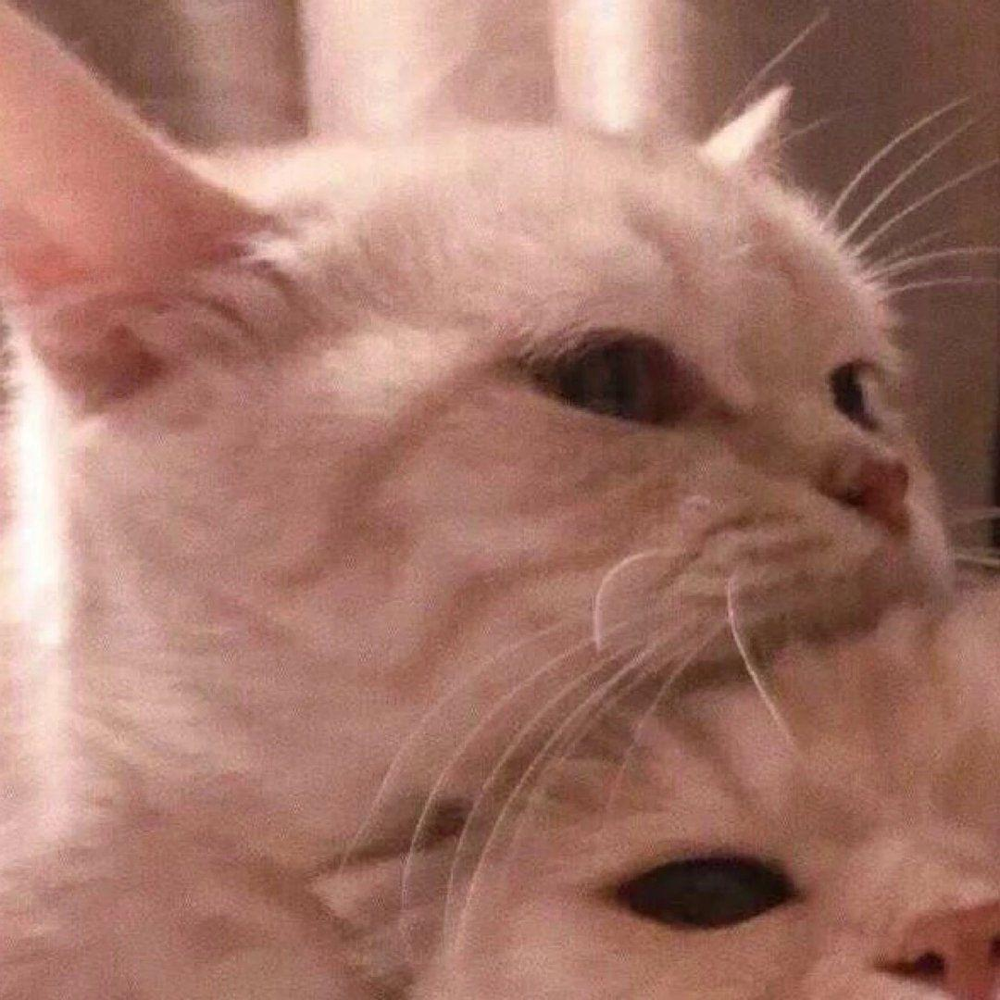

开始
2020年10月19
当时晚自习下课的时候开玩笑问你：“如果我追你，你会不会同意？”你回过头不知道是不是在偷笑，然后转过来问我：“是认真的吗？”我一听，一振，心想好像要成了，回答道：“是！”然后你点点头。这是我们的开始
晚一点遇见你，余生都是你
当时晚自习下课的时候开玩笑问你：“如果我追你，你会不会同意？”你回过头不知道是不是在偷笑，然后转过来问我：“是认真的吗？”我一听，一振，心想好像要成了，回答道：“是！”然后你点点头。这是我们的开始
第一次出去玩，你陪我去吃了我很喜欢的麻辣烫，我们一起逛街，然后去看电影，那场电影人很少一共就四个人。宝宝真的胆子很小，牵手都要我来。没关系，我主动也很好。忘记是第几次出去玩了，很晚了，你送我回家，当时真的特别感动，虽然我嘴上没说什么，但是真的心里真的超级感动，嗯，越来越喜欢你了呢
第几次出来玩了？(记性很不好的我...)刚开始沈先生真的很不会谈恋爱 老惹我生气还不会哄，也不会抱抱。当时越来越晚了我就穿了件毛衣，很冷，想让你抱抱我，你却搂我肩膀。？？？当时我就很疑惑，不是都搂腰吗，怎么还有肩膀，那不是兄弟？不想和你谈着谈着就处成兄弟，所以及时制止住了你想要搂我的肩膀。当然，也不是一帆风顺，抱抱的途中有很多人无意间会打断，为了不影响未来的祖国的小花朵，只能被迫中断。不过，沈先生的怀里真的很暖和。棒棒哒!
刚开始我真的不知道我的未来会是什么样子，也是真的不想结婚，怕遇到会辜负我的人，怕到时候结婚了会承受不住生活的压力，怕会离婚。但是遇到了沈先生呢，突然又觉得好像结婚也没有那么恐怖了，你不会无条件的迁就我，遇到原则性问题时会指出来，这就是我们吵了几次架的基础。所以我有时候我也很气，你为什么就不能哄哄我呢，你说你真的想跟我有以后，所以要解决所有问题。嗯，好叭，原谅你了。我也有在好好学习，我也不想以后因为我的工作问题 ，让你爸妈阻止我们在一起，也不想最后因为外在原因我们不能在一起。所以我们一起努力吧！沈先生，新年快乐！